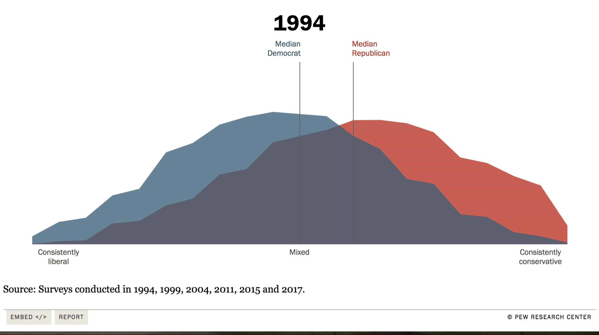

Ever wonder why is society becoming more politically divided?

How companies like
Google,
Facebook,
and
Youtube
make money?
Why fake news spreads
6x
faster than real news?
Welcome to...
But first, what is a content algorithm?